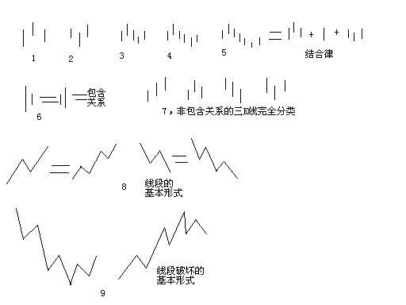

0567 - 教你炒股票62：分型、笔与线段¶
日期：(2007-06-30 09:49:51) 分类：[时政经济（缠中说禅经济学）]
在宾馆里闲着等着10点开始的腐败，半个小时，找个面首来面首有点时间紧张，还不如给各位写个主贴，来个课程，耗费一下各位周末腐败的时间。
瞧了一下，有位叫石猴的网友写了帖子来解释什么是线段，他的理解还行，但不够严密。其实，本ID的线段是可以最精确定义的，本ID的理论，本质上是一套几何理论，其有效性就如同几何一般，本ID理论当然有失败不严谨的时候，但这前提是几何的基础失败不严谨，不明白这一点，就不明白本ID的理论。这里，就把本来是后面的课程提前说说。
下面的定义与图，都适合任何周期的K线图。先看图中的第1、2，图中的小线段代表的是K线，这里不分阳线阴线，只看K线高低点。

像图1这种，第二K线高点是相邻三K线高点中最高的，而低点也是相邻三K线低点中最高的，本ID给一个定义叫顶分型；图2这种叫底分型，第二K线低点是相邻三K线低点中最低的，而高点也是相邻三K线高点中最低的。看不明白定义的，看图就明白了，这么直观都不明白，那去和孔男人为伍吧。
顶分型的最高点叫该分型的顶，底分型的最低点叫该分型的底，由于顶分型的底和底分型的顶是没有意义的，所以顶分型的顶和底分型的底就可以简称为顶和低。也就是说，当我们以后说顶和底时，就分别是说顶分型的顶和底分型的底。
两个相邻的顶和底之间构成一笔，所谓笔，就是顶和底之间的其他波动，都可以忽略不算，但注意，一定是相邻的顶和底，隔了几个就不是了。而所谓的线段，就是至少由三笔组成。但这里有一个细微的地方要分清楚，因为结合律是必须遵守的，像图3这种，顶和底之间必须共用一个K线，这就违反结合律了，所以这不算一笔，而图4，就光是顶和底了，中间没有其他K线，一般来说，也最好不算一笔，而图5，是一笔的最基本的图形，顶和底之间还有一根K线。在实际分析中，都必须要求顶和底之间都至少有一K线当成一笔的最基本要求。
当然，实际图形里，有些复杂的关系会出现，就是相邻两K线可以出现如图6这种包含关系，也就是一K线的高低点全在另一K线的范围里，这种情况下，可以这样处理，在向上时，把两K线的最高点当高点，而两K线低点中的较高者当成低点，这样就把两K线合并成一新的K线；反之，当向下时，把两K线的最低点当低点，而两K线高点中的较低者当成高点，这样就把两K线合并成一新的K线。经过这样的处理，所有K线图都可以处理成没有包含关系的图形。
而图7，就给出了经过以上处理，没有包含关系的图形中，三相邻K线之间可能组合的一个完全分类，其中的二、四，就是分别是顶分型和底分型，一可以叫上升K线，三可以叫下降K线。所以，上升的一笔，由结合律，就一定是底分型+上升K线+顶分型；下降的一笔，就是顶分型+下降K线+底分型。注意，这里的上升、下降K线，不一定都是3根，可以无数根，只要一直保持这定义就可以。当然，简单的，也可以是1、2根，这只要不违反结合律和定义就可以。
至于图8，就是线段的最基本形态，而图9，就是线段破坏，也就是两线段组合的其中一种形态。有人可能要说，这怎么有点像波浪理论，这有什么奇怪的，本ID的理论可以严格地推论出波浪理论的所有结论，而且还可以指出他理论的所有不足，波浪理论和本ID的理论一点可比性都没有。不仅是波浪理论，所有关于股市的理论，只要是关系到图形的，本ID的理论都可以严格推论，因为本ID的理论是关于走势图形最基础的理论，谁都逃不掉。
不能再废话了，下面车来了，腐败开始，大家也腐败去吧。
本文评论获取自靠谱的方式，包含疑似禅师的回复数量：[85]
UID:[0] 昵称：[匿名] 3G 日期：(2007-06-30 10:10:58)
这一章太重要了，谢谢--
UID:[0] 昵称：[匿名] Q 日期：(2007-06-30 10:15:24)
QIANG
UID:[0] 昵称：[匿名] 3G 日期：(2007-06-30 10:17:27)
[匿名] 缠文观止 2007-06-30 10:14:32
强顶！这课是基础中的基础。早些看到就好了。
、、
现在也不晚，学会楼主的理论，还怕没机会？
UID:[0] 昵称：[匿名] GG 日期：(2007-06-30 10:23:31)
mm,对你的敬业表示尊敬！谢谢你！努力学习中，连周末都在学习！
UID:[0] 昵称：[匿名] TT 日期：(2007-06-30 10:28:11)
楼主辛苦，学习ing
UID:[0] 昵称：[匿名] CCTV 日期：(2007-06-30 10:37:30)
妹子好早呀！！！！！！！
UID:[0] 昵称：[匿名] CCTV 日期：(2007-06-30 10:43:59)
石猴 2007-06-30 10:39:26
昨天发了我的导读一,这里骂声一片,说我是神棍,误导初学者.我在导读里留了个破绽,这个破绽不影响你化出本级别的折,目的想找出这里真的高手.呵,现在我找到了,到目前高手还只有小缠本人.本想等周一再发贴说那个问题.现在小缠一发言,恐怕这个测试是做不成了.
、、
你有病呀？？？？？就你高手？？？？你说那些和妹子这里说的是一回事吗？？？？？你那些转折，和妹子这里严格的分类定义是一回事吗？？？？？？？
UID:[0] 昵称：[匿名] CCTV 日期：(2007-06-30 12:02:06)
[匿名] maoren 2007-06-30 11:54:01
在任何初级教材里都有的基础知识，在这里被当成高深莫测的理论来讲解。服了！
、、
这不是基础知识？？？？？只有孔肥肥才会觉得高深！！！！在妹子的理论里最多是幼儿园前的！！！！别的书里的说法和妹子的是一回事吗？？？？？？？
UID:[0] 昵称：[匿名] CCTV 日期：(2007-06-30 12:05:19)
石猴 2007-06-30 12:02:23
maoren ,请具体说明,市面上有的股票书,在看小缠理论之前,我基本都买了,请问哪本初级教材里讲过?请具体讲,空说没意思
-
这才算人话！！！
UID:[0] 昵称：[匿名] CCTV 日期：(2007-06-30 12:07:24)
[匿名] 新浪网友 2007-06-30 11:19:25
--
CCTV- 是蒙对的
石猴--不够严密-言下之意--你们靠了或者看了他们-结果造成的损失与我无关是他们不行您接着忽悠，俺就在这看您到灰飞湮灭的那天
、、
SB！！！！！炒股票想让别人负责不是SB是什么？？？？？？？
UID:[0] 昵称：[匿名] TT 日期：(2007-06-30 12:15:40)
石猴 2007-06-30 12:10:53
有个提议,请大家清扫下自己的学习环境,很都人因为股票的失败,来这里骂人,这些就是垃圾,大家得自己动手.股失败没什么,谁都会犯错误,努力学习操作股票,不再被股票操作就行了.跑来骂人,把自己的失败怨在别人身上,怨到小缠身上,典型的婴儿思维.你是成人啊,你是有自己脑子的人啊,你脑袋里装的是人的脑汁,不是豆汁,不是猪脑酱啊!有脑子不用还做什么人.更可笑的事,自己被股票操了,惟恐天下不知道,跳起八长高,告诉大家,我被股票操了,我被股票操了.哈哈,等下次再有这样一来的垃圾来,请大家一起哈哈,然后告诉他,我们都知道了我们都知道了,你被股票操了,你被股票操了!这样的笑料,唉,别来丢人现眼了.
-
顶
UID:[0] 昵称：[匿名] 3G 日期：(2007-06-30 12:39:24)
预祝缠妹妹博客点击今天冲500万--
UID:[0] 昵称：[匿名] GG 日期：(2007-06-30 14:42:22)
石猴 2007-06-30 10:39:26
昨天发了我的导读一,这里骂声一片,说我是神棍,误导初学者.我在导读里留了个破绽,这个破绽不影响你化出本级别的折,目的想找出这里真的高手.呵,现在我找到了,到目前高手还只有小缠本人.本想等周一再发贴说那个问题.现在小缠一发言,恐怕这个测试是做不成了.
-----------------
你好，能把自己的学习体会拿出来和大家探讨分享是很好的，我们都认可并谢谢你。其他同学有体会的可以一起来探讨，不要做人身攻击。请大家一起维护这里良好的学习氛围，否则就不必在这里浪费时间和精力。除了做股票赚钱，更多的是做人，只有把人做好了，才能做好事情！只有没有能力的人才通过贬低别人来抬高自己，也有素质的人是越低调，也谦虚的！
UID:[0] 昵称：[匿名] 3G 日期：(2007-06-30 15:50:07)
静观楼主博客冲500万-
UID:[0] 昵称：[匿名] 3G 日期：(2007-06-30 16:05:40)
[匿名] 笔 2007-06-30 15:53:37
今天的文章很重要，不过请问博主，对于图1至图3的顶与底反复相邻出现（即中间没有上升K线和下降k线）该如何处理和判断，用结合律吗还是别的什么
、、
楼主文章里都说清楚了，这种情况不算一笔-
UID:[0] 昵称：[匿名] TT 日期：(2007-06-30 16:15:29)
[匿名] “简单”并不简单 2007-06-30 14:52:32
这个“简单”，刚刚来的时候总是有一句没一句地发贴，不知所云，还在教导别人怎么炒股，这些，前面回帖里面都有。今天早上前一个贴里他声称是在缠中说缠博客的最后一帖，还自行公开了姓名地址QQ。当然，也没谁要求他这样，然后他就卯上劲头要清理这个清理那个了，还开始把话题往明确的人、明确的罪名上扯，要往政治上靠。所以，他的想法其实不简单。他有什么想法，大家有兴趣的，自行加他的QQ私下讨论；这里，是缠中说禅谈论语、谈股票、谈音乐的地方，这几百万点击率，不应该成就了这个“简单”，简而言之，一颗老鼠屎不应该坏了一锅粥。大家注意了哦。
=
对，估计是想让新浪关了缠主的博客，故意说敏感话题。
UID:[0] 昵称：[匿名] 3G 日期：(2007-06-30 16:16:32)
4999911
UID:[0] 昵称：[匿名] 3G 日期：(2007-06-30 16:20:32)
5000005，没看到500万，可惜。祝贺缠妹妹博客上半年最后一天超500万，今年应该能超1000万，赶上孔男人--
UID:[0] 昵称：[匿名] CCTV 日期：(2007-06-30 18:57:43)
[匿名] 新浪网友 2007-06-30 17:25:22
[匿名] 新浪网友 2007-06-30 17:03:55
博主给出的线段要么是上升的，要么是下降的。盘整的情况不算了吗？还是直接当作中继或转折忽略了？
这个问题没有人回答吗？有高手结合个最近个股复杂点的行情分下笔和段，这样大家估计就都清楚了。(当然如果缠主能做就更好了^-^)
在这吵架、骂人的就省省力气去419不行吗？浪费想学习的人的时间。
-
晕，真不知道你看的什么呀！！！！三笔构成的线段你说是盘整还是上涨、下跌？？？？？？你看妹子标记的100多线段里，都是上涨、下跌吗？？？？？
UID:[0] 昵称：[匿名] CCTV 日期：(2007-06-30 19:03:36)
[匿名] 藤缠树 2007-06-30 17:32:24
缠主现在分的段和原来课程里的有点不同。如：54课里的段按今天缠主定义的应该都是笔，54课中缠主把每段里的笔都抹去了吗？
-
妹子今天说的没什么不同！！！线段是至少三笔构成，和54说的没什么不同！！！只是更精确定义啦！！！！你去看看妹子分的那100多段！！！大爷俺可每段都研究过啦！！！！
UID:[0] 昵称：[匿名] CCTV 日期：(2007-06-30 19:07:33)
[匿名] 新浪网友 2007-06-30 17:20:14
说也说了，骂也骂了，再来说说自己认为什么是线段？线段就是没有中枢结构的一段走势，它的终结是它以下级别的背驰。如果以最小级别就是三根K线有重叠算中枢的话，那么顶分型和底分型都不算线段，而一笔算不算线段？看这一笔高中的低点和低中的高点有没有重叠，有就不是线段，没有就是线段。7图中，1、3不是线段，2、4是，8图不分析，楼主已给答案。9图线段是怎么被破坏的？9.1高点到低点，走势的下上下，其中总有一根是上下之间的下上下共用走势，这样的共用走势是不能用作中枢一段的，所以它们是线段，线段以下级别背驰转折后，就走出形成中枢的第二段，线段被破坏。图9.2反过来解即可。其实图9里的两个图型就是底分型和顶分型没有完成的形态。
、、
KAO，这种理解能力还来说妹子的文章？？？？妹子文章里哪个字说7图里的是线段啦？？？？？那连笔都算不上还线段？？？？？
UID:[0] 昵称：[匿名] CCTV 日期：(2007-06-30 19:17:55)
小明 2007-06-30 18:08:32
大家不要太迷信一个理论，尤其是一个纸上谈兵的理论！ 缠的理论虽然完美，无懈可击 太复杂，没有实际可操作性有什么用呢？老实说，群里面有很多人炒股的收益竟然在学了缠的理论后反而下降了！！！大家要深思啊！不是我泼老大的水，我是想作为一个有良心的，正直的人应该说实话！我今天看了李志林的一篇文章，有所触动，他说出了很多精英，很多既得利益者知道但是从来不说的话，我觉得他是在为广大股民，广大老百姓说话！是个不错的人。试想，如果每个精英每个懂行的人都不说实话，都在欺骗小散户，那我们的国家还有什么改良的希望？！
、、
你连妹子那些分类都没给搞清楚，就会用妹子的理论？？？？？你用的什么理论？？？？？而且妹子早说过，没学明白之前都不要用于实战，没看明白？？？？？？？
UID:[0] 昵称：[匿名] CCTV 日期：(2007-06-30 19:20:08)
小明 2007-06-30 18:35:16
小散户妄图做足每次差价，吸N多血，这个目标真的难达到！不要试图赚到每一个利润。如果有工作的，不以炒股为生的，千万不要抱太高的要求，不要指望暴利！
只要比放在银行的利息高就可以了！最好的办法就是买入一个股不动！那种试图做到每一个波段的思想是非常可笑的！最好的办法就是买入一个好股不动！
长期投资！如果你手痒，上班没什么事干，有的是时间，我还是建议拿很少一部分钱来做短线！大部分钱还是做中长线。
、、
先搞懂什么叫级别！！！短差一定很短吗？？？？如果你用30分钟弄短差，5月底出来以后根本就不用再操作，这也是短差！！！！！真不明白你们怎么看妹子的文章的！！！！
UID:[0] 昵称：[匿名] CCTV 日期：(2007-06-30 19:21:04)
[匿名] 袖手旁观 2007-06-30 19:19:08
提示一下，图中1～7的基本单元是单根K线；第8第9的基本单元是缠mm本课定义的“笔”。都是废话，不过前面有人误解。
、、
对呀，看来这里孔肥肥那里来的人太多啦！！！！
UID:[0] 昵称：[匿名] CCTV 日期：(2007-06-30 19:24:26)
[匿名] 新浪网友 2007-06-30 18:11:15
这里还挺热闹啊！可那位知道在一星期内点击率超过1000万、中央电视2台称之为“善'\"义”之举的地方吗?我认为博主很伟大，原来。与038008的庄家比，当下。博主不过是萤虫之光。相比。
原因一、现场实时解说———看看038008的庄家怎么做的，博主又是怎么回答的。（网友们仅仅希望博主指出技术上的买卖点等而已。）
原因二、个股的走势————还是来比较一下两者吧。看看038008的庄家对0380008的坦诚，而这里网友跟着博主买的600139、600569、000416等，博主又是怎么解释这些走势的？
原因三、对跟着博主买他推荐的16只票的网友，不知有那位统计过没有，时至今日，大盘涨多少，这16只票每只又涨多少？（包括几个所谓的好学生能操作的一些短差）
--
你SB呀！！！妹子那16只股票半年平均涨幅237%！！！！大盘才不到80%！！！那3G已经统计出来，你没看过？？？？？？
UID:[0] 昵称：[匿名] CCTV 日期：(2007-06-30 19:27:18)
上面的SB看看！！！！
[匿名] 3G 2007-06-23 01:30:05
按上面新浪网友要求，用事实说话
---
楼主股票（推荐买入价） 最高 上涨幅度
000999（6） 21.57 260%
000600（5） 13.7 174%
000777（8） 26.88 236%
600777（4） 14.44 261%
000778（5） 18.48 270%
000416（3） 18.50 517%
000915（3） 10.50 250%
000099（4） 12.41 210%
600635（5） 22.35 347%
600649（6） 17.49 192%
600578（5） 17.44 249%
600343（11） 23.63 115%
000938（10） 18.19 82%
600432（19） 67.90 257%
000998（9） 20.27 125%
000802（10） 20.44 104%
平均涨幅228%，上海今年最低点2541到最高点4335，涨幅71% 。
UID:[0] 昵称：[匿名] CCTV 日期：(2007-06-30 19:29:42)
[匿名] 优雅从容 2007-06-30 19:24:36
[匿名] 优雅从容 2007-06-30 12:20:39
夜雨姐姐，请教636是不是无量空跌，可以买了？
=====================
笔误，是想问635无量空跌可以买了吗？绿柱萎缩。
请教大家1分钟MACD图用什么软件看？我用的西南证券钱龙，只有5分，15分以上的MACD,工具精度不够，自己水平不够，把大家辅助用的MACD图当成自己主要判断的依据，惭愧。
问一个弱智问题：缠姐姐相册里的那个图用什么软件可看到呀？还可以把多天拼起来哦。
--
妹子那软件好象是同化顺，网上都有下载的！！！600635我觉得在10元下可以慢慢买啦！！！现在还没有买点呀！！！！
UID:[0] 昵称：[匿名] CCTV 日期：(2007-06-30 19:36:26)
[匿名] 下下 2007-06-30 19:32:46
[匿名] CCTV 2007-06-30 19:27:18
上面的SB看看！！！！
[匿名] 3G 2007-06-23 01:30:05
按上面新浪网友要求，用事实说话
---
楼主股票（推荐买入价） 最高 上涨幅度
【编者注：上面已经有了，此处略去】
上海今年最低点2541到最高点4335，涨幅71% 。
CCTV，你不妨再统计一下现在的涨幅，或者统计一下与大盘的跌辐比较下。其中938，416与635跌得十分惨烈。
、、
妹子不是说过了吗？？？卖点卖了当然希望离下一个买点的距离大点！！！！谁让你有卖点不卖的！！！！妹子的手法还不清楚？？？？就是大幅度震荡打差价！！！你不跟着她的手法去，肯定不行啦！！！！！你学妹子的理论，见了大卖点一定要卖呀！！！！不光对妹子的股票，自己的股票也是一样呀！！！！
UID:[0] 昵称：[匿名] CCTV 日期：(2007-06-30 19:42:34)
[匿名] 新浪网友 2007-06-30 19:36:28
[匿名] 袖手旁观 2007-06-30 18:58:31
[匿名] 新浪网友 2007-06-30 17:20:14
说也说了，骂也骂了，再来说说自己认为什么是线段？线段就是没有中枢结构的一段走势，它的终结是它以下级别的背驰。如果以最小级别就是三根K线有重叠算中枢的话，那么顶分型和底分型都不算线段，而一笔算不算线段？看这一笔高中的低点和低中的高点有没有重叠，有就不是线段，没有就是线段。
——————————————————————————
后面的不引了，就说你的“一笔算不算线段”这句。你肯定没好好看今天这课，明明白白的“所谓的线段，就是至少由三笔组成。”看见了吗？别老骂人了，你的时间还真多，可惜基本概念有误。
——————————————————————————————————————————————————————————————————————————————————
很高兴有个人出来交流。我的前提是：“如果以最小级别就是三根K线有重叠算中枢的话，”，另外，你也要仔细看清楚我后面说的：“9.1高点到低点，走势的下上下，其中总有一根是上下之间的下上下共用走势，这样的共用走势是不能用作中枢一段的，所以它们是线段，”三笔是什么型？N字型，N字型是什么？现在叫线段，以前叫中枢，一个N字型是中枢还是线段，以什么标准区别？就是用上下两走势之间连接，这个连接不能用作中枢段，所以，独立出来的一个N字型，你不能说它是线段还是中枢，要有前提才行。如果你仔细看了我的帖，你就知道：一笔构成中枢，这个一笔有重叠形成的N字型是不包括那连接段的。不包括连接段的N字型是中枢还是不是中枢，那就对照楼主中枢定义来检查。
、、
KAO，这种智力水平还好意思讨论！！！现在最小级别的中枢是指1分钟级别的！！！知道为什么吗？？？妹子说过，理论上那递归定义在实际上并不需要真从最低级别开始！！！可以用实际上最方便的级别开始！！！妹子这里讨论的就是把1分钟中枢当最低级别的！！！笔和线段根本就没有中枢！！！这都不明白？？？？？？
UID:[0] 昵称：[匿名] CCTV 日期：(2007-06-30 19:50:40)
[匿名] lxjhz 2007-06-30 19:40:51
博主的文字实在博大精深，我等愚昧，看了感觉云里雾，哪位能点拨一下：顶分型的最高点叫该分型的顶，底分型的最低点叫该分型的底，由于顶分型的底和底分型的顶是没有意义的，所以顶分型的顶和底分型的底就可以简称为顶和低。也就是说，当我们以后说顶和底时，就分别是说顶分型的顶和底分型的底。两个相邻的顶（就是上文定义的“顶分型的顶”，即“顶分型的最高点”？）和底（就是上文定义的“底分型的底，即“底分型的最高点”？）之间构成一笔，所谓笔，就是顶（同问）和底（同问）之间的其他波动，都可以忽略不算，但注意，一定是相邻的顶（同问）和底（同问），隔了几个就不是了。而所谓的线段，就是至少由三笔组成。但这里有一个细微的地方要分清楚，因为结合律是必须遵守的，像图3这种，顶和底之间必须共用一个K线，这就违反结合律了，所以这不算一笔，而图4，就光是顶和底了，中间没有其他K线，一般来说，也最好不算一笔，而图5，是一笔的最基本的图形，顶和底之间还有一根K线。在实际分析中，都必须要求顶和底之间都至少有一K线当成一笔的最基本要求。急死人了，谁肯帮下忙？多谢！
、、
大爷今晚有空，帮一下你吧！！！妹子文章不是说了吗？？？看不明白定义就去看图！！！第5个图是最小的笔！！！更大的笔就是把两个加号中间那一个K线变成一组下降K线！！！！上升的反过来就是啦！！！！
UID:[0] 昵称：[匿名] CCTV 日期：(2007-06-30 19:58:02)
[匿名] 新浪网友 2007-06-30 19:51:41
[匿名] CCTV 2007-06-30 19:42:34
[匿名] 新浪网友
……
、、
KAO，这种智力水平还好意思讨论！！！现在最小级别的中枢是指1分钟级别的！！！知道为什么吗？？？妹子说过，理论上那递归定义在实际上并不需要真从最低级别开始！！！可以用实际上最方便的级别开始！！！妹子这里讨论的就是把1分钟中枢当最低级别的！！！笔和线段根本就没有中枢！！！这都不明白？？？？？？
————————————————————————————————————————————————
你也看清楚，我从来没定级别，只讲K线，最低级别每个人根据自己的风格定。我现在的问题是：一笔能不能构成中枢，也就是图5等式左边第1根K线与第七根K线有重叠，算不算中枢？再重复一遍：这个N字型是不包括那连接段的。
-
大爷不是已经在上面说了吗？？？妹子这里的前提是把1分钟中枢当成最小中枢！！！妹子说顶和底之间的都可以忽略不算当成一笔，那里面难道没有1分钟以下的中枢吗？？？？为什么可以忽略不算？？？？？就是妹子已经把1分钟中枢当成是最小级别的！！！如果不是这样，那些走势为什么可以忽略不算呀？？？？而且还要纠正你一个错误，不是三个K线的重合是中枢，中枢和什么K线没什么关系！！！！
UID:[0] 昵称：[匿名] CCTV 日期：(2007-06-30 20:04:53)
[匿名] 新浪网友 2007-06-30 19:55:02
大爷今晚有空，帮一下你吧！！！妹子文章不是说了吗？？？看不明白定义就去看图！！！第5个图是最小的笔！！！更大的笔就是把两个加号中间那一个K线变成一组下降K线！！！！上升的反过来就是啦！！！！
——————————————————————————————————————————————————————————
第四根K线跟第三根第五根在实图中怎么区别出来？
--
看看妹子的第7图，知道什么叫完全分类吗？？？？就是所有图形都肯定是这分类里的一种！！！！理解了这个还有什么不明白的？？？？？友情提醒，还要把第六图看明白，妹子文章里有大段说明！！！！
UID:[0] 昵称：[匿名] CCTV 日期：(2007-06-30 20:05:43)
[匿名] 优雅从容 2007-06-30 20:04:15
多谢CCTV、不想飞姐姐，怎么同花顺要收钱的吗？
--
不知道呀！！！我没用过呀！！！应该不用的吧！！！
UID:[0] 昵称：[匿名] CCTV 日期：(2007-06-30 20:13:14)
[匿名] 新浪网友 2007-06-30 20:08:13
大爷不是已经在上面说了吗？？？妹子这里的前提是把1分钟中枢当成最小中枢！！！妹子说顶和底之间的都可以忽略不算当成一笔，那里面难道没有1分钟以下的中枢吗？？？？为什么可以忽略不算？？？？？就是妹子已经把1分钟中枢当成是最小级别的！！！如果不是这样，那些走势为什么可以忽略不算呀？？？？而且还要纠正你一个错误，不是三个K线的重合是中枢，中枢和什么K线没什么关系！！！！
——————————————————————————————————————————————————————————————
顶底谁都知道，顶和底之间是线段，再问你一分钟中枢算不算你说的最低级别一分钟图上中枢？有一分钟中枢的走势类型还叫不叫线段？第一根K线与第七根K线有重叠，或者说，第一段走势与第七段走势有重叠，是不是中枢？
--
线段不是1分钟走势类型，1分钟K线重合和1分钟中枢没关系，你说那些都不是1分钟中枢，你根本连妹子前面的帖子都没看懂过！！！！
UID:[0] 昵称：[匿名] CCTV 日期：(2007-06-30 20:14:27)
[匿名] 新浪网友 2007-06-30 20:12:45
请问cctv，600636现在可以买吗？周五买了就套，不知下面如何走，请cctv帮助看看，谢谢！
-
周五买肯定套不住的！！！但如果是我，一定要它能不能跌破10元！！！要找安全的买点呀！！！
UID:[0] 昵称：[匿名] CCTV 日期：(2007-06-30 20:16:18)
[匿名] 新浪网友 2007-06-30 20:08:13
大爷不是已经在上面说了吗？？？妹子这里的前提是把1分钟中枢当成最小中枢！！！妹子说顶和底之间的都可以忽略不算当成一笔，那里面难道没有1分钟以下的中枢吗？？？？为什么可以忽略不算？？？？？就是妹子已经把1分钟中枢当成是最小级别的！！！如果不是这样，那些走势为什么可以忽略不算呀？？？？而且还要纠正你一个错误，不是三个K线的重合是中枢，中枢和什么K线没什么关系！！！！
——————————————————————————————————————————————————————————————
顶底谁都知道，顶和底之间是线段，再问你一分钟中枢算不算你说的最低级别一分钟图上中枢？有一分钟中枢的走势类型还叫不叫线段？第一根K线与第七根K线有重叠，或者说，第一段走势与第七段走势有重叠，是不是中枢？
-
KAO，还看少你一个错误！！！顶和底之间是线段？？？？谁告诉你的呀？？？？你连妹子今天的文章都没看懂！！！！！
UID:[0] 昵称：[匿名] CCTV 日期：(2007-06-30 20:26:36)
[匿名] 新浪网友 2007-06-30 20:19:49
顶底谁都知道，顶和底之间是线段，再问你一分钟中枢算不算你说的最低级别一分钟图上中枢？有一分钟中枢的走势类型还叫不叫线段？第一根K线与第七根K线有重叠，或者说，第一段走势与第七段走势有重叠，是不是中枢？
-
KAO，还看少你一个错误！！！顶和底之间是线段？？？？谁告诉你的呀？？？？你连妹子今天的文章都没看懂！！！！！
————————————————————————————————————————————————————————————————
不要回避问题，不是线段，你就给个定义，我再用你的定义提问。两个问题：
一是第一根K线跟第七根K线有重叠是不是中枢？
二怎么在实图上区分出来第三、四、五根K线？
--
你有病呀？？？上面不是已经回答你啦！！！自己看去！！！
UID:[0] 昵称：[匿名] CCTV 日期：(2007-06-30 20:28:35)
[匿名] yw 2007-06-30 20:21:08
有一个疑问，不知道哪位大侠有空时解答一下：第一类买点，出现在中枢之下，第二类买点出现在中枢的任意位置都可以，第三类买点则只能出现在中枢之上，第二类买点与第三类买点有重合的可能。。。我有个问题是，对于卖点，不知道大家是怎么考虑的？？第一类卖点是不是一定出现在中枢之上呢？？第二类卖点呢？？是不是也一定可以在中枢的任意位置出现呢？而第三类卖点，是不是只能出现在中枢之下啊？禅师讲的时候，提的比较多的都是买点，但请问卖点该如何理解呢？？
--
应该反过来就是啦！！！按我对妹子文章的理解，买卖点的情况反过来就是，都一样的！！！
UID:[0] 昵称：[匿名] CCTV 日期：(2007-06-30 20:37:32)
[匿名] 新浪网友 2007-06-30 20:35:55
[匿名] CCTV 2007-06-30 20:26:36
[匿名] 新浪网友 2007-06-30 20:19:49
顶底谁都知道，顶和底之间是线段，再问你一分钟中枢算不算你说的最低级别一分钟图上中枢？有一分钟中枢的走势类型还叫不叫线段？第一根K线与第七根K线有重叠，或者说，第一段走势与第七段走势有重叠，是不是中枢？
-
KAO，还看少你一个错误！！！顶和底之间是线段？？？？谁告诉你的呀？？？？你连妹子今天的文章都没看懂！！！！！
————————————————————————————————————————————————————————————————
不要回避问题，不是线段，你就给个定义，我再用你的定义提问。两个问题：
一是第一根K线跟第七根K线有重叠是不是中枢？
二怎么在实图上区分出来第三、四、五根K线？
--
你有病呀？？？上面不是已经回答你啦！！！自己看去！！！
——————————————————————————————————————————————————————————————————
CCTV，你就这德性了，你以前说的东西我从来就没认真看过，这里有些人说你好，楼主早早也表扬过你，以为你真有两下子，今天算领教了，后来楼主说你蒙，呵呵呵，真是那么回事，一知半解叫得厉害。你玩去吧，看来罗锅是比你强多了，罗锅还有自知之明，你呢，下三烂的翻白眼那一套。
-
死剩一把嘴！！！亏死你活该！！！
UID:[0] 昵称：[匿名] TT 日期：(2007-06-30 20:38:18)
有人也太蠢了，CCTV就是罗锅，这都看不出。
UID:[0] 昵称：[匿名] CCTV 日期：(2007-06-30 20:46:01)
[匿名] 新浪网友 2007-06-30 20:42:15
CCTV，你就这德性了，你以前说的东西我从来就没认真看过，这里有些人说你好，楼主早早也表扬过你，以为你真有两下子，今天算领教了，后来楼主说你蒙，呵呵呵，真是那么回事，一知半解叫得厉害。你玩去吧，看来罗锅是比你强多了，罗锅还有自知之明，你呢，下三烂的翻白眼那一套。
-
死剩一把嘴！！！亏死你活该！！！
——————————————————————————————————————————————————————————————————————————————
你发你的财吧，还好，这个月，我一翻半，不用你关照。
--
继续死剩一把嘴！！！
UID:[0] 昵称：[匿名] CCTV 日期：(2007-06-30 21:01:58)
[匿名] 一字末角 2007-06-30 20:52:09
博主对老孔可谓“一往情深”，凡是理解不了她理论的都以孔男人概括。
老孔的文风大气粗犷，文字却优雅精致。每篇博客的跟贴都对文章就事论事或自抒情怀，跟贴中出现对老孔的指责，也未见冬瓜丝恶语相向。因为股票的原因才来到博主的博客，两月多了，受了博主的些许感染，遂在这里自称本散户（注：本散户乃孔庆东粉丝--冬瓜丝）。说句实话，本散户目前对于博主的理论还是一头雾水，仍在继续学习，估计这里大多数禅迷也是茫然的很。令本散户很不爽的是，可能受了博主动辄“男猿”、“面首”“孔男人”之类的文风传染，这里的部分禅迷行为十分恶略，如cctv之流，凡是对于跟贴中对博主的指责，不论对错一概在“你有病”或“SB”的中枢中震荡用以攻击。语言粗鄙，手段恶略。本散户以后还会经常来这里，学习博主理论。可能还会看到如cctv之流的部分禅迷上台表演。
--
KAO，孔肥肥写的诗和妹子的一比就知道算什么啦！！！！还大气？？？？？
UID:[0] 昵称：[匿名] CCTV 日期：(2007-06-30 21:02:46)
[匿名] 新浪网友 2007-06-30 20:57:19
[匿名] CCTV 2007-06-30 20:46:01
[匿名] 新浪网友 2007-06-30 20:42:15
CCTV，你就这德性了，你以前说的东西我从来就没认真看过，这里有些人说你好，楼主早早也表扬过你，以为你真有两下子，今天算领教了，后来楼主说你蒙，呵呵呵，真是那么回事，一知半解叫得厉害。你玩去吧，看来罗锅是比你强多了，罗锅还有自知之明，你呢，下三烂的翻白眼那一套。
-
死剩一把嘴！！！亏死你活该！！！
——————————————————————————————————————————————————————————————————————————————
你发你的财吧，还好，这个月，我一翻半，不用你关照。
--
继续死剩一把嘴！！！
——————————————————————————————————————————————————————————————————————
好吧，最后跟你对一次话。如果你记忆不差又看这里的每一个帖的话，你应该在这个月头就看到有一个新浪网友多次叫你玩沽，那就是在下，当时我还是同情你的，叫你到那玩去，我那时就两翻了，下半月亏了一点。现在剩一翻半。
--
又一次死剩一把嘴！！！
UID:[0] 昵称：[匿名] CCTV 日期：(2007-06-30 21:06:44)
[匿名] yw 2007-06-30 21:02:48
关于今天的课程，按照第5图的结合律，那么一个笔至少由七根K线组成，而所谓的线段，就是至少由三笔组成，那么就是说一个线段至少都是21根K线，能这样理解吗？？（禅师在图上标的线段中，有的很长，有的很短，由于图太小，我也看不清那些最短的线段是否超过了21根K线呢？？如果低于21根，那我就郁闷了）
对于图6，那种包含关系的处理，请问，如果是三根K线，出现了“III”这种情况，由于这里不能画图，我只能打个比方，就是中间那根K线，既被前面K线所包含，同时也被后面K线所包含，那么请问在处理时，应该将其归入前面一根来处理？还是后面一根来处理呢？禅师在文中没有提到过此问题，不知道谁能提供一下你们的意见？
-
我觉得你理解不对！！！！按我对妹子文章的理解顶、底的K线是分别属于两笔！！！！顶、底就是分界！！！一段最少的应该不用21根K线！！！！！我算了一下应该12根就可以啦！！！！
UID:[0] 昵称：[匿名] CCTV 日期：(2007-06-30 21:09:03)
[匿名] 新浪网友 2007-06-30 20:59:05
大家都别争了，都怪缠老大，天天就知道花天酒地，性福生活，自己的理论都不好好一步步解说清楚，很多定义都没详细说明。所以才有大家的争论，因为没定义所以大家才有猜测，各种类似论语的解说－－百家争鸣。但缠女王的理论是科学的，既然科学就要有一步步的详解而不是没有定义的随口而说，希望女王把自己的理论，从在1F的K线图上说明一笔，一线段，一中枢，直至在30F上一笔，一线段，一中枢，做一下详细说明，不然大家理解错了，天天学有什么用啊，天天为些概念在这争论，这就是女王的不是，大家应该每天说的是哪个股是第几买点，卖点，而不是没有明确定义的概念。
如果女王想让大家天天就来争论没有明确定义的概念，那女王干脆去灯会工作算了，那里女王可以天天做无数个谜语让别人去猜。言重之处请女王和丝们谅解！因为每天这么多人看，但没几个人真正明白，那女王浪费大家多少的时间，加起来多少光年了。我也是为大家节省时间才有感而发。不想要空中花园。
-
KAO，又有一个自己没看明白怪妹子的！！！为什么石猴都能看明白？？？？大爷我也能看明白？？？？大爷把妹子画的100多段全研究过啦！！！这里有谁每一段都研究过呀？？？？？我觉得妹子的定义都很清楚！！！！
UID:[0] 昵称：[匿名] CCTV 日期：(2007-06-30 21:19:33)
[匿名] yw 2007-06-30 21:14:57
关于今天的课程，按照第5图的结合律，那么一个笔至少由七根K线组成，而所谓的线段，就是至少由三笔组成，那么就是说一个线段至少都是21根K线，能这样理解吗？？（禅师在图上标的线段中，有的很长，有的很短，由于图太小，我也看不清那些最短的线段是否超过了21根K线呢？？如果低于21根，那我就郁闷了）
对于图6，那种包含关系的处理，请问，如果是三根K线，出现了“III”这种情况，由于这里不能画图，我只能打个比方，就是中间那根K线，既被前面K线所包含，同时也被后面K线所包含，那么请问在处理时，应该将其归入前面一根来处理？还是后面一根来处理呢？禅师在文中没有提到过此问题，不知道谁能提供一下你们的意见？
-
第一个问题已经回答你啦！！！第二个问题太简单啦！！！你想想在实际行情中你是先看到1、2根K线还是2、3根K线呀？？？？肯定是用1、2根K线定义包含关系啦！！！！这点还用妹子去说？？？？
UID:[0] 昵称：[匿名] CCTV 日期：(2007-06-30 21:23:42)
高山沐清风 2007-06-30 21:18:32
看了老大今天的课，突然觉得老大还是没有把线段的级别给做下定义，现只能根据今天定义的线段来分析一下，不对请指点一下。
在30分的K线图上，可以有1分级别的一笔，可以有由至少三个一笔组成的的线段，这是5分级别的线段，再就是5分级别的线段组成的一个30分的中枢，再可能扩展成大级别的中枢，这样说对否？
如果对，那缠老大就太不应该了，正如今天的课一样，这样严谨的定义都先不说就讲这么多定理，大家不搞晕才怪呢
--
是你自己概念不清楚！！！还怪妹子？？？？？线段是针对最低级别中枢说的，如果最低级别中枢是1分钟，哪里会有5分钟级别的线段呀？？？？？？
UID:[0] 昵称：[匿名] CCTV 日期：(2007-06-30 21:30:42)
[匿名] 新浪网友 2007-06-30 21:24:19
[匿名] yw 2007-06-30 21:14:57
关于今天的课程，按照第5图的结合律，那么一个笔至少由七根K线组成，而所谓的线段，就是至少由三笔组成，那么就是说一个线段至少都是21根K线，能这样理解吗？？（禅师在图上标的线段中，有的很长，有的很短，由于图太小，我也看不清那些最短的线段是否超过了21根K线呢？？如果低于21根，那我就郁闷了）
对于图6，那种包含关系的处理，请问，如果是三根K线，出现了“III”这种情况，由于这里不能画图，我只能打个比方，就是中间那根K线，既被前面K线所包含，同时也被后面K线所包含，那么请问在处理时，应该将其归入前面一根来处理？还是后面一根来处理呢？禅师在文中没有提到过此问题，不知道谁能提供一下你们的意见？
————————————————————————————————————————————————————————————————————————————————————
第一个问题，看看自己用多少根K线能画出什么图型对照定义理解。第二个问题，是在上升还是下跌里，在上升里，取最高点为顶，三根K线低中的最高点为低，这样把这三根K线合并成一根K线，这根K线高就是那最高，低就是三低中的最高；下跌里，反过来即可。
-
我觉得不对！！！！按妹子的定义不是这样的！！！按你的方法，形成分型就一定需要4根K线！！！按照妹子的定义，前两根构成一个大K线，就有可能第3根K线就构成分型！！！！！
UID:[0] 昵称：[匿名] TT 日期：(2007-06-30 21:44:06)
大家安静，不要骂人，研究问题`
UID:[0] 昵称：[匿名] CCTV 日期：(2007-06-30 21:45:40)
[匿名] 新浪网友 2007-06-30 21:40:17
你这个神经兮兮的女人！言语中充满暧昧，我的一个哥们被你迷的死去活来的！害得我也经常要看看你放些什么气！你的狗屁理论只是波浪理论的改编。偷换了一些术语而已！你的面首、腐败是你的性权利，没有必要拿出来炫耀吧？
--
又一个SB！！！没看到妹子关于波浪理论的评论吗？？？？
UID:[0] 昵称：[匿名] CCTV 日期：(2007-06-30 21:58:44)
大爷闪人啦！！！！KAO，妹子不在，真没意思！！！！88888888888888888
UID:[0] 昵称：[匿名] XX 日期：(2007-07-01 01:54:45)
[匿名] 新浪网友 2007-06-30 18:11:15
这里还挺热闹啊！可那位知道在一星期内点击率超过1000万、中央电视2台称之为“善'\"义”之举的地方吗?我认为博主很伟大，原来。与038008的庄家比，当下。博主不过是萤虫之光。相比。原因一、现场实时解说———看看038008的庄家怎么做的，博主又是怎么回答的。（网友们仅仅希望博主指出技术上的买卖点等而已。）原因二、个股的走势————还是来比较一下两者吧。看看038008的庄家对0380008的坦诚，而这里网友跟着博主买的600139、600569、000416等，博主又是怎么解释这些走势的？原因三、对跟着博主买他推荐的16只票的网友，不知有那位统计过没有，时至今日，大盘涨多少，这16只票每只又涨多少？（包括几个所谓的好学生能操作的一些短差）因此，我觉得博主，你很无耻！——这些网友的散户是你的百万雄兵吗？ 你很下流！——你统再看看你在文章中的看法！要知道，人生而平等、人有所不同、你如果没有那所谓的消息，你的收益比大家多部到哪。你如果没有一好的背景，你可能还不如。。。
——--
支持和骂我的网友请看完博主的文章和038008庄家的故事再骂不迟 ！真的要好好想想！！！多次提醒了！！不要因此改变自己原来的买卖方式，看看就行，不然很吃苦头的。。。！！！
UID:[0] 昵称：[匿名] CCTV 日期：(2007-07-01 07:33:55)
[匿名] 新浪网友 2007-06-30 18:11:15
这里还挺热闹啊！可那位知道在一星期内点击率超过1000万、中央电视2台称之为“善'\"义”之举的地方吗?我认为博主很伟大，原来。与038008的庄家比，当下。博主不过是萤虫之光。相比。原因一、现场实时解说———看看038008的庄家怎么做的，博主又是怎么回答的。（网友们仅仅希望博主指出技术上的买卖点等而已。）原因二、个股的走势————还是来比较一下两者吧。看看038008的庄家对0380008的坦诚，而这里网友跟着博主买的600139、600569、000416等，博主又是怎么解释这些走势的？原因三、对跟着博主买他推荐的16只票的网友，不知有那位统计过没有，时至今日，大盘涨多少，这16只票每只又涨多少？（包括几个所谓的好学生能操作的一些短差）因此，我觉得博主，你很无耻！——这些网友的散户是你的百万雄兵吗？ 你很下流！——你统再看看你在文章中的看法！要知道，人生而平等、人有所不同、你如果没有那所谓的消息，你的收益比大家多部到哪。你如果没有一好的背景，你可能还不如。。。——--支持和骂我的网友请看完博主的文章和038008庄家的故事再骂不迟 ！
-
你SB呀！！！妹子000416告诉你的价位是3元，最高是多少？？？？现在还有多少？？？139妹子当天早上已经警告你不要去买，买了肯定洗盘，帖子还在，没看见？？？？？569让9元买，逃过一次大跌，还能有几天10元多的出货机会，而且妹子还特别在第一天说了剧本改变，不走的不是SB是什么？？？？？跌到7元那天，妹子还在帖子里暗示跌多的那些可以看好买点回补，自己看不懂怪谁？？？？？后来569三天内去到9元多，近30%，你SB看不到吗？？？？？？？？
UID:[0] 昵称：[匿名] CCTV 日期：(2007-07-01 08:00:46)
[匿名] 新浪网友 2007-07-01 07:56:03
号称大资金，整天应酬面首腐败出差，这样的人的操作手法，居然是和几万元做权证的小散一样：执着于盘面的每一分钟波动，执着于在那里盘中买入卖出。你是做的T+0吗？盘中那么多波动，你能做几个T+0？你是在做权证吧？
-
SB！！！你看过妹子的文章吗？？？？？1分钟图上不能看大级别吗？？？？妹子文章都没看懂，还敢说？？？？？？？
UID:[0] 昵称：[匿名] CCTV 日期：(2007-07-01 08:14:00)
[匿名] 新浪网友 2007-07-01 08:04:25
呵呵，CCTV，你也太忙了吧，装什么装，你就是禅中说缠本人啊！你们是在1分钟图上看大级别吗？？？？你们不是口口声声在一分钟图形里面折腾做差价成本降为零吗？
-
典型的SB！！！
UID:[0] 昵称：[匿名] CCTV 日期：(2007-07-01 08:18:41)
[匿名] July 2007-07-01 08:08:47
cctv你来啦！！cctv~~~~帮我看看600652和600107行么？我的重仓。652我在60f上明显有段间背驰，和段内背驰，可是怎么就不反弹呢？107现在出还有意义么？
--
晕呀，你没去看妹子的文章呀？？？？600652在60f上没有背驰呀，妹子说的黄白线哪里有回拉0轴呀？？？？不过，应该是进入背驰段啦！！！可以用妹子的方法去精确定位的！！！背驰成立后，反弹应该能到7.39元，这是妹子理论确定的最低反弹目标！！！至于其他，妹子没说过，我也不懂呀！！！！！
UID:[0] 昵称：[匿名] CCTV 日期：(2007-07-01 08:20:39)
大爷现在就两只股票：600839、600832！！！！准备用妹子的方法一直把成本搞成0！！！！！！
UID:[0] 昵称：[匿名] CCTV 日期：(2007-07-01 08:24:42)
JULY1！！！！刚才说的有点不对呀！！！！652的黄白线有回拉0轴！！！按照妹子的理论，就可以先假定进入背驰段！！！！但是否真背驰还要看后面的走势去定位！！！妹子文章里有区间套定位的方法呀！！！！107应该有更高的位置走的！！！！
UID:[0] 昵称：[匿名] CCTV 日期：(2007-07-01 08:31:35)
[匿名] 新浪网友 2007-07-01 08:25:25
点中你的死穴了：禅中说缠，CCTV还有石猴，就是一个人！
[匿名] 新浪网友 2007-07-01 08:26:42
哈哈，好玩，石猴被当成楼主本人，现在CCTV也被当成楼主的马甲，下一位是谁？
--
还有下一位就是新浪网友
UID:[0] 昵称：[匿名] CCTV 日期：(2007-07-01 08:35:20)
[匿名] 新浪网友 2007-07-01 08:29:13
原先我觉得那些追随者很可怜，现在我觉得禅中说缠更可怜。因为她（他）压根就一无所有，他不是为了欺骗别人，而是为了欺骗自己，自己在生活中得不到的，全都在网上虚构了出来。
--
你污蔑妹子的理论不行，就开始污蔑妹子其他方面，你的行为妹子可以容忍，大爷就不能容忍！！！！
UID:[0] 昵称：[匿名] CCTV 日期：(2007-07-01 08:38:41)
[匿名] 新浪网友 2007-07-01 08:31:56
真正有官方背景手握重金的，全都是画图控盘，而禅中说缠的所谓理论，全都是要顺势，甚至盘中一分钟的下跌也要顺势，那就是几百股几千股的小买卖才能这样做，还经常会做反。
--
你SB呀！！！！妹子现在教你画图的理论你能办到吗？？？？一个学不会妹子的理论，只能满口喷粪的垃圾！！！！！！
UID:[0] 昵称：[匿名] CCTV 日期：(2007-07-01 08:42:29)
[匿名] 新浪网友 2007-07-01 08:36:51
CCTV整天守着这个贴，不是因为其他的，是因为他要维护自己帖，维护自己的观点，反驳所有质疑帖主也就是他的帖。
--
大爷就是要维护妹子，怎么啦？？？？？你去查一下，大爷已经好多天不发言了，这两天，看到有些垃圾，连妹子的文章都没看懂就喷粪，大爷就要维护，怎么啦？？？？？
UID:[0] 昵称：[匿名] CCTV 日期：(2007-07-01 08:43:53)
[匿名] July 2007-07-01 08:40:17
[匿名] CCTV 2007-07-01 08:24:42
JULY1！！！！刚才说的有点不对呀！！！！652的黄白线有回拉0轴！！！按照妹子的理论，就可以先假定进入背驰段！！！！但是否真背驰还要看后面的走势去定位！！！妹子文章里有区间套定位的方法呀！！！！107应该有更高的位置走的！！！！
-------------
这两个票是跟学禅前进的，所以mm是没有说过啦。看到你的回复太高兴啦！！！谢谢！！！你说600107有更高的位置走，是不是也是觉得有段间背驰的存在？我是这么看到的呀，可是学艺不精，眼看着走势不是像我判断，急呀！！！
--
我怎么回答你呀，你没看到有一SB说这里的都是妹子的马甲！！！他会说你也是马甲，我们在演戏的！！！！！！
UID:[0] 昵称：[匿名] CCTV 日期：(2007-07-01 08:46:56)
[匿名] 新浪网友 2007-07-01 08:40:32
呵呵，禅中说缠的粉丝都到哪儿去了？怎么就一个CCTV在反驳？看来你也无法“同时”装成不同的粉丝的缘故吧。
-
典型的SB，你看看现在几点？？？？现在是什么日子？？？
UID:[0] 昵称：[匿名] CCTV 日期：(2007-07-01 08:47:37)
[匿名] 大胜凭德 2007-07-01 08:44:43
[匿名] 大胜凭德 2007-06-30 20:00:09
这周大家无不对钾庄的义举感到佩服,而对缠妹不进行现场直播发发牢骚.但这些发牢骚的人有脑子吗?缠论学而会用之是一辈子的事,而让你在一个股票上在低得不能再低的价位让你走了,你觉得碰到了恩人了,在证券市场有多少不是弱弱强食的?如果自己不学好本领,到最后还得被市场吞没.请问那位指责的人你在证券市场做了几年?你遇到过多少血雨腥风?你有那个资格说吗?缠论有缘得之,无缘也是你自己的造化!5.30.6.26缠妹早上那么早上网提醒大家,你用心了吗?而那14个股票在提醒人的时候股价在哪?你知道吗?人得有良心,否则猪狗不及<今天言重了,请大家原谅>给你一个过一生好日子的本事,你不好好学,却去感恩一个只能给你过几天辛苦日子的人,你这样的人根本就不适合这个市场,因为你的眼光太差!!!!
--
注意，不要发言，你是妹子的马甲！！！！！
UID:[0] 昵称：[匿名] TT 日期：(2007-07-01 08:52:22)
什么乱七八糟的，这里是学习的地方，不是来看你们吵架的。
UID:[0] 昵称：[匿名] TT 日期：(2007-07-01 08:57:25)
[匿名] 轻风吹断 2007-07-01 08:54:12
昨天淘到了一个很有趣的票，资料如下：总股本6600万，流通盘2900万。现价2.58元，流通股东户数535名，户均持股54585股。地处大连，中国第五大岛。筹码真不是一般的集中。。。
-
2.58元？是不是写错了？
UID:[0] 昵称：[匿名] CCTV 日期：(2007-07-01 08:58:37)
[匿名] TT 2007-07-01 08:52:22
什么乱七八糟的，这里是学习的地方，不是来看你们吵架的
-
KAO，大爷在这里打SB，你还说风凉话？？？？？？不把这些SB打掉，这里有好的学习环境吗？？？？？
UID:[0] 昵称：[匿名] CCTV 日期：(2007-07-01 08:59:57)
[匿名] 轻风吹断 2007-07-01 08:57:57
000008 000503当年筹码最集中的时候也没有如此夸张，考虑要紧点底仓了。盘子太小，老大的说法，进去抢的人太多容易乱套。大伙知道有这么一个票就行了。呵呵。
-
按上面SB的逻辑，你也是妹子的马甲！！！！
UID:[0] 昵称：[匿名] TT 日期：(2007-07-01 09:03:55)
[匿名] CCTV 2007-07-01 08:58:37
[匿名] TT 2007-07-01 08:52:22
什么乱七八糟的，这里是学习的地方，不是来看你们吵架的
-
KAO，大爷在这里打SB，你还说风凉话？？？？？？不把这些SB打掉，这里有好的学习环境吗？？？？？
、
我说不过你，你继续闹吧-
UID:[0] 昵称：[匿名] CCTV 日期：(2007-07-01 09:09:21)
[匿名] July 2007-07-01 09:01:52
[匿名] CCTV 2007-07-01 08:24:42
JULY1！！！！刚才说的有点不对呀！！！！652的黄白线有回拉0轴！！！按照妹子的理论，就可以先假定进入背驰段！！！！但是否真背驰还要看后面的走势去定位！！！妹子文章里有区间套定位的方法呀！！！！107应该有更高的位置走的！！！！
-----------------
CCTV，怎么看黄白线回抽0轴啊？禅mm总这么说，可是最近的图解课程都是1f级别的，mm说过1f一下级别的背驰，只看红绿柱子，所以都没有看到过黄白线回抽0轴。在1f以上级别，如5f，30f，按照我的经验，只有背驰段真正走出转折走势以后，黄白线才开始回抽0轴，我这样的看法对么？？能不鞥年用你的832的30f图的例子，讲讲黄白线回抽0轴的标准啊？特别特别的感谢~~~~~
-
错啦！！你没看妹子的课程呀？？？先回拉0轴才可能进入背驰段呀！！！！妹子文章里都写得很清楚的呀！！！！！
UID:[0] 昵称：[匿名] TT 日期：(2007-07-01 09:10:44)
[匿名] 轻风吹断 2007-07-01 09:07:20
0633筹码最集中的时候也有过这个现象。02年中报的时候，每个帐户平均持股54348股
-
是中小版的？
UID:[0] 昵称：[匿名] CCTV 日期：(2007-07-01 09:15:04)
[匿名] July 2007-07-01 09:11:02
CCTV，有空举个黄白线回抽0轴的例子，好么？？？？？mm的理论，我都是看着好象明白了，真正到如何判断背驰就没把握了。尤其是红绿柱子没创新低/新高，可是黄白线还在继续下行/上行，这个时候就不知道是不是背驰了！！！！帮忙回答一下阿！！！！！！！！！！支持CCTV同学！！！！！！！！！！！！！！
--
按我对妹子理论的理解，黄白线创新低肯定不是背驰！！！！背驰例子，你看看妹子的600569，7.05元，5分钟图！！！！！太明显啦！！！！！太标准啦！！！！！
UID:[0] 昵称：[匿名] TT 日期：(2007-07-01 09:16:04)
[匿名] 轻风吹断 2007-07-01 09:12:11
这个票是在有点妖啊，筹码最集中的时候流通股东才468户，人均持有62400股。
-
是中小版的？
UID:[0] 昵称：[匿名] TT 日期：(2007-07-01 09:23:11)
[匿名] 轻风吹断 2007-07-01 09:18:04
TT，这个票和现任商务部部长有些关系。具体的自己查一下吧，可惜不能给你发站内短信。
-
谢谢
UID:[0] 昵称：[匿名] CCTV 日期：(2007-07-01 09:25:26)
[匿名] July 2007-07-01 09:18:50
[匿名] CCTV
错啦！！你没看妹子的课程呀？？？先回拉0轴才可能进入背驰段呀！！！！妹子文章里都写得很清楚的呀！！！！！
--------------------
当然看啦！！！！！只是水平和学习的时间都比你差很多...5555....我把mm的课程粗看了2遍了，大体的感觉，背驰的判断准确的话，（背驰和盘整背驰），就算是超级牛人啦！！可是这也是比较难的，至少我现在也没能准确地判断！！！所以想请你拿832或者别的什么票举个例子，mm的课程我才学了月余，把她的课程都打出来了，可是以前举的例子都是去年或者今年2月份左右的，又是5f，30f的居多，我的软件上都没有这些数据啦！！想看看你有没有最近的例子，让我明白一下~~~~~~~比如从几点开始是黄白线回抽0轴，从几点开始背驰段开始....
--
晕，上面回答你了呀！！！妹子的600569，5分钟图，7.05元！！！！你看多标准呀！！！！
UID:[0] 昵称：[匿名] CCTV 日期：(2007-07-01 09:40:28)
[匿名] 新浪网友 2007-07-01 09:35:52
[匿名] 轻风吹断 2007-07-01 09:29:46
[匿名] ninth
别捣乱了，你那是3板的票。
--------------------------
哈哈，来了位明白的。我把这个票当作一个样本来看，PT农商社用了五年变成都市股份，翻了100多倍。主板这样的机会不多吧？
-
你是缠中说禅的马甲，这里90%都是缠中说禅的马甲。
[匿名] 新浪网友 2007-07-01 09:38:00
面瓜牌SB最大的本事就是把简单的事情用最复杂（还自以为是最严密和完美的理论）来表达。
[匿名] 新浪网友 2007-07-01 09:38:43
这里，任何叫老大、女王等肉麻词语、为缠中说禅辩护的，都是缠中说禅的马甲。
-
有人让妹子给搞疯了！！！！！
UID:[0] 昵称：[匿名] TT 日期：(2007-07-01 09:43:36)
[匿名] ninth 2007-07-01 09:22:32
[匿名] 轻风吹断2007-07-01 09:12:11
这个票是在有点妖啊，筹码最集中的时候流通股东才468户，人均持有62400股。
----------------------------------------------
别捣乱了，你那是3板的票。
-
谢谢
UID:[0] 昵称：[匿名] TT 日期：(2007-07-01 09:49:07)
今天这里有病的人太多，走人，免得染病。
UID:[0] 昵称：[匿名] CCTV 日期：(2007-07-01 09:52:58)
[匿名] 新浪网友 2007-07-01 09:48:03
我揭露你们，都不敢说话了，你们都是马甲。
-
SB一个！！！！是不是高位接了妹子的416，亏死啦？？？？？？？
UID:[0] 昵称：[匿名] 3G 日期：(2007-07-01 11:04:36)
哈哈，股市一跌，都疯呢？
UID:[0] 昵称：[匿名] 3G 日期：(2007-07-01 11:32:23)
[匿名] 人比黄花瘦 2007-07-01 11:11:06
学禅一周汇报:反复看了禅论的一些重要课程，感觉初学者首先要掌握的就是三类买卖点，而第一、二类买卖点都与背驰有关，在“没有趋势，没有背驰”这一原理的指引下，我就先和“趋势”较上劲了。通过学习，得出一个印象：次级别的趋势，反映在本级别就是线段。所以，如果本级别有两条相邻的同方向的线段，与次级别的趋势相重叠（其实在本级的K图上如果线段中的均线出现了一次以上的“吻”就可以确认了），用MACD进行比较，就可以判断是否背驰，从而找出第一类买卖点了。第二类买卖点就是背驰后K线第一次反方向走势后回调的高点或低点。当一段趋势曲折地到达顶点或底点时，必然会产生一个中枢，而曲折部分的最后一个重叠部分就是这段趋势最后一个中枢的区间。当K线在离开此中枢并不能回到该中枢区间的话，我们就说K线突破此中枢，这也意味这前一个中枢的结束，仅这次突破的顶点或底点就是第三类买卖点。关于中枢，任意连续的、重叠的线段都有可能形成中枢，如何选择中枢的组合与中枢的级别和当下所进行的操作的级别有关。在判断第三类买卖点时，关键是要组合出对当下的操作有指导意义的中枢。而判定一个线段是否属于当下的这个中枢，就看它的顶点或底点是否在当下这个中枢区间里。以上理解对否？恳请老师和学长指正。谢谢！
-
你的理解好象不对，“当一段趋势曲折地到达顶点或底点时，必然会产生一个中枢”？看不明白你想说什么。
UID:[0] 昵称：[匿名] TT 日期：(2007-07-01 11:44:45)
今天热闹，大胆推测一下，匿名新浪网友和简单，应该是一个人。
UID:[0] 昵称：[匿名] 3G 日期：(2007-07-01 12:18:28)
[匿名] 人比黄花瘦 2007-07-01 11:52:26
[匿名] 3G
-
你的理解好象不对，“当一段趋势曲折地到达顶点或底点时，必然会产生一个中枢”？看不明白你想说什么。
————————————————————————————
对不起，理了一下思路，感觉到这个表述错了，这个印象是针对第二\三类买卖点同时出现的特殊情况,并不是必然的.改正如下:一段趋势或盘整后肯定会出现中枢，当中枢出现时，就应该等待第三类买卖点的出现。这样靠谱了吗?
-
第三买卖点出现和中枢的破坏，这在楼主课程里反复说过。另外，趋势、盘整里也有中枢，说中枢一定要先确定级别。你最好还是先反复研究楼主的文章，我说的也不一定对，不想影响你。
UID:[0] 昵称：[匿名] 悠悠悠哉 日期：(2007-07-01 20:57:28)
老大最后总不忘说一声 我是最牛的理论可是看不太懂唉 老大！